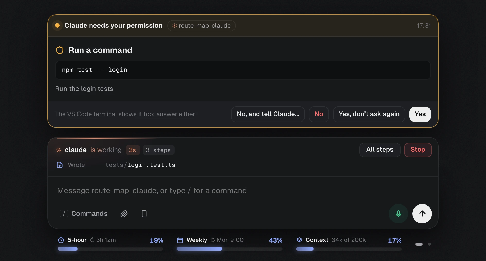
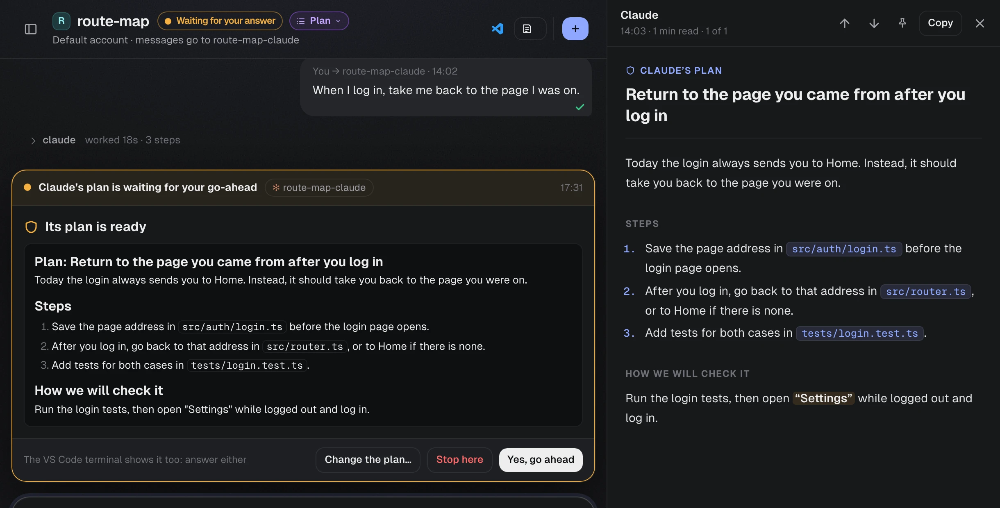
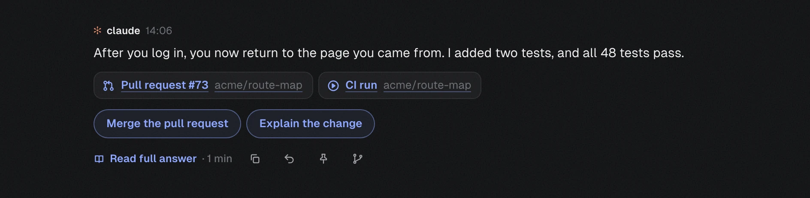
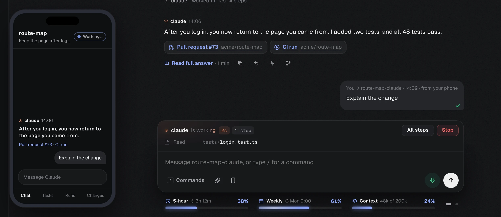

Near your limit?Move the chat to your other Claude account
Projects found for youSet up with Claude names each one
Dev server opens tooA project’s terminals start with it
Screen stays awakeWhile any Claude session is open
Claude suggests notesSaved only when you approve
Background tasks, liveSee each one run, and what it prints
The pit wall for vibe coders.
One cockpit. Every coding session.
Your data stays on your MacWorks with Claude CodeVS Code or TerminalGitHub linksYour iPhone or Android browser
Sound familiar?
Claude Code is powerful. Running it in a row of terminals is not. VibePit gives it a proper home on your Mac.
Answer Claude in one place
Stop switching between terminals. VibePit shows what every Claude Code session is doing, and lets you answer it with a click.
Answer Claude without finding the terminal
When Claude asks a question or needs your permission, the request appears in the Chat with clear buttons.
- Yes, No, or tell Claude what to do instead
- Don’t ask again, when Claude Code offers it
- Answer on the Mac or from your phone

See the plan before any file changes
In plan mode, Claude proposes a plan first. VibePit opens it beside the Chat as a document that is easy to read.
- Approve it with one click
- Or write what should change
- Pin it, or branch it into a new session

Know the outcome at a glance
Every answer starts with a one-line headline, so you see what happened before you read the details.
- Pull requests, reviews and checks under it
- Suggested replies you send with one click
- Reply to one answer, or copy a message to pass on

- Read
src/auth/login.ts - Read
src/router.ts - Searched
“redirect” in src4 matches - Edited
src/router.ts+12 −3 - Ran
npm test -- login12 passed - Writing
tests/login.test.ts
route-map-claude · Keep the page after login
See every step Claude takes
In the terminal, a long task is a wall of text. In VibePit, each step appears as it happens, so you always know what Claude is doing and how far it has got.
- Every file it reads, searches and edits
- Every command it runs, with the result
- A clock and a step count, and Stop when you need it
npm run db:reset
What it doesDeletes your local database and fills it again with sample data, so the login tests start from a clean state. It does not touch any server.
Know what a command does before it runs
Not sure about a command Claude wants you to run? VibePit explains it in plain words and tells you how risky it is. Nothing runs until you press Run and confirm.
- What it does, in one or two sentences
- Only reads, Changes something, or Hard to undo
- Where it runs, and its output goes back to Claude

Carry on from your phone
Scan a QR code, press Allow on the Mac, and your phone’s browser shows the same Chat. There is nothing to install.
- Send messages, answer Claude and stop a tab
- On your Wi-Fi, or from anywhere over an encrypted link
- Each code works once, and only after you allow it
Everything else, built in
The small things that make a long day with Claude Code easier.
Stay organised
Keep what matters from every conversation.
- Notes
- Notes and checklists for each project, on one board.
- Reminders
- They arrive on time, even with the laptop locked.
- Pinned messages
- Pin any answer or plan, and find it again in seconds.
- Messages to pass on
- When Claude writes a message for someone, copy it ready to paste.
Watch your limits
No surprise when a limit runs out.
- Usage meters
- Your 5-hour and weekly Claude limits, with reset times.
- Context meter
- How full each conversation is, so you know when to start fresh.
- Your week
- Seven days per project: time worked, messages sent, time Claude waited.
- Two accounts
- Choose which Claude account each project or tab uses.
Work your way
Faster ways to steer Claude.
- Quick suggestions
- Suggested replies, and Claude’s commands and skills as you type /.
- Branch
- Try another approach from any message, in a new session.
- Resume
- Earlier conversations are kept by day. Open one and carry on.
- Review mode
- Type /review 42 and Claude reviews the pull request with your own prompt.
Always in reach
VibePit is there even when its window is not.
- Floating panel
- Every tab’s state on every desktop, even over full-screen apps.
- Menu bar icon
- Start, stop and open VibePit from the menu bar.
- Catch up
- What each tab did while you were away.
- Your phone
- Scan a QR code and answer Claude from anywhere.
Up and running in three steps
You need a Mac with macOS 12 or later, and a Claude account that can use Claude Code. Most people are ready in about ten minutes.
Download and install
Drag VibePit to Applications and open it. The first time, macOS asks you to press Open Anyway.
Follow Get started
One button each to install Claude Code, log in and add your projects. Each step ticks itself off.
Open a project
Type “open” and a project’s name. VS Code opens it with Claude ready, and VibePit follows every step.
Your data stays on your Mac
VibePit keeps everything in the app, on your Mac. It sends nothing to us or to anyone else: no account, no tracking. Your messages go only to Claude, through your own Claude Code, as they always have.
- Nothing sent anywhere
- Your projects, notes, pins and history stay on your Mac. The only thing VibePit asks the internet is whether a new version is out.
- No account, no tracking
- There is no VibePit account to create, and the app does not collect how you use it.
- Closed to the network
- The app talks only to itself, and every request needs a secret token.
- Your phone, only when you allow it
- It opens to a phone only while one you allowed is connected, and you can disconnect it at any time.
Frequently asked questions
Yes. VibePit is free. You use your own Claude account, so your usual Claude plan or API costs apply.
No. VibePit is a window for Claude Code that you use by typing and clicking. Voice is an optional extra: you can talk to it and hear short summaries, or turn the microphone off completely.
No. Everything stays on your Mac. Your messages go to Claude through your own Claude Code, exactly as when you use it in the terminal, and VibePit itself sends nothing anywhere.
Any Mac with macOS 12 or later, with Apple silicon (M1 or later) or an Intel processor. Each has its own download.
It is recommended: each project opens in VS Code with Claude in its terminal panel. If you prefer, Claude can open in Terminal instead.
VibePit is not yet signed with an Apple Developer ID. Open System Settings, then Privacy & Security, and press Open Anyway next to VibePit. You only do this once.
When a new version is out, VibePit tells you. Press Update now, and it installs the update and opens again. Your projects and settings are kept.
Try VibePit on your next task
Free for Mac. Your data stays on your Mac. Set up in about ten minutes.